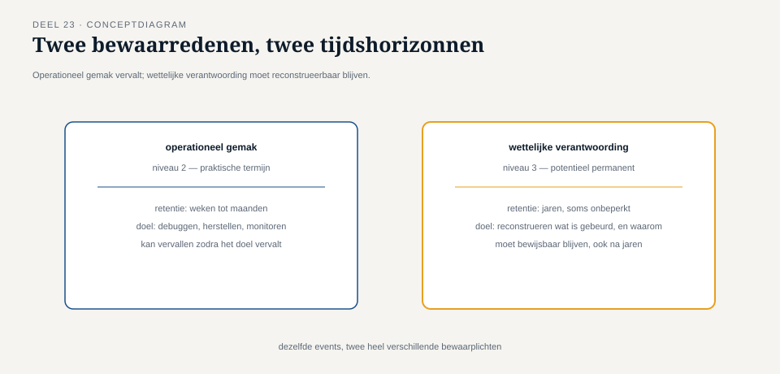

Deel 23 — Event-driven architectuur en event streaming fundamenten
Reader · Ductus-cursus Enterprise Integration Patterns · niveau 3 (expert) · deel 23 van 30
23.0 Een nieuwe opdracht, een nieuwe schaal
Caspar Rijnders is inmiddels senior integratiearchitect. Zijn nieuwe opdracht is de Stelselovergang: de overgang van Meridiaan naar het nieuwe pensioenstelsel (Wtp), met een wettelijke deadline van 1 januari 2028, drie verplichte verantwoordingsdocumenten richting DNB en AFM, en twee kernrisico's die de hele operatie beheersen — invaren (het overzetten van bestaande pensioenaanspraken naar het nieuwe stelsel) en datakwaliteit (de garantie dat elke overgezette aanspraak correct en herleidbaar is).
Het Mutatieplatform van niveau 2 blijft bestaan en functioneert, maar de Stelselovergang stelt eisen die niveau 2's ontwerp niet voorzag. Invaren is geen doorlopend operationeel proces zoals een salariscorrectie — het is een eenmalige, wettelijk verplichte, voor elke deelnemer individueel uit te voeren gebeurtenis, die vanaf het moment van uitvoering onomkeerbaar en auditeerbaar moet vaststaan. Bij een controle door DNB moet Meridiaan, jaren later, kunnen aantonen: welke gegevens golden voor deze deelnemer op het moment van invaren, welke berekening is toegepast, en wie of wat die berekening heeft uitgevoerd.
Dit is een ander soort eis dan alles wat niveau 1 en 2 tot nu toe stelden. Niveau 2's event backbone (deel 11) bewaarde gebeurtenissen al voor een praktische termijn, om laat aangesloten abonnees in te kunnen halen. De Stelselovergang vraagt iets fundamenteel anders: bewaring niet als operationeel gemak, maar als wettelijke verplichting, en niet voor een praktische termijn, maar potentieel voor de rest van het bestaan van de deelnemersrelatie.

23.1 Wat event-driven architectuur hier anders maakt dan in niveau 2
Deel 11 introduceerde de event backbone als één van drie architectuurstijlen, gekozen op basis van de aard van het verkeer. In niveau 3 wordt event-driven architectuur niet langer één keuze naast andere, maar het fundament van het hele invaarproces, om een reden die rechtstreeks uit de wettelijke eis volgt: elke stap in het invaarproces moet een onweerlegbaar, tijdgestempeld feit worden dat nooit wordt overschreven, alleen aangevuld — precies de eigenschap die een event (deel 2: "dit is gebeurd", onveranderlijk) van nature heeft, en die een command (deel 2: een opdracht, uitgevoerd en dan "verbruikt") niet heeft.
Dit verklaart waarom niveau 3 begint met event streaming in plaats van met een nieuw patroon: de vraag is niet meer "wanneer kies ik voor een event backbone" (deel 11 beantwoordde dat al), maar "hoe bouw ik een keten waarin het feit dat iets gebeurd is, zelf het enige en volledige bewijs is van wat er gebeurd is."
Kernzin 23 van de cursus: waar niveau 1 en 2 events gebruikten om systemen te laten samenwerken, gebruikt niveau 3 events om vast te leggen wat waar is — het verschil tussen communicatiemiddel en bewijsmiddel bepaalt elke ontwerpkeuze in dit niveau.
23.2 Event streaming: de technische vorm die deze eis mogelijk maakt
Event streaming is de praktijk van het behandelen van een continue, geordende reeks events als de primaire, gezaghebbende bron van waarheid — niet als een tijdelijk transportmechanisme tussen systemen (zoals in niveau 1-2), maar als het permanente archief van alles wat is gebeurd. Technisch bouwt dit rechtstreeks voort op de log-gebaseerde broker uit deel 16: berichten die niet verdwijnen na aflevering, maar blijven staan in een doorlopend, append-only logboek — nu niet gekozen voor de praktische bewaareigenschap van deel 11, maar omdat het logboek zelf het wettelijke bewijs wordt.
Drie eigenschappen van event streaming worden in deze context van louter praktisch naar wettelijk kritisch:
Onveranderlijkheid (immutability). Een eenmaal gepubliceerd event wordt nooit gewijzigd of verwijderd — precies de discipline die deel 18 al introduceerde voor saga-compensatie ("voeg nieuwe feiten toe, wis nooit oude feiten"), hier verheven tot een architecturaal, niet-onderhandelbaar uitgangspunt. Als een eerder vastgelegd feit onjuist blijkt, wordt een nieuw, corrigerend event toegevoegd dat expliciet naar het oorspronkelijke verwijst — nooit een aanpassing van het origineel.
Herleidbare volgorde. Zoals deel 8 al vaststelde, garandeert partitionering volgorde binnen de grens van hetzelfde object. Voor invaren is die grens de individuele deelnemer: elk event in de invaargeschiedenis van deelnemer 00482 moet, jaren later, in de exacte volgorde reconstrueerbaar zijn waarin het plaatsvond — niet slechts "waarschijnlijk correct" maar aantoonbaar correct, met een technisch bewijsbare tijdsvolgorde.
Herspeelbaarheid (replay). Omdat het logboek nooit wordt opgeruimd (in tegenstelling tot de praktische bewaartermijn van deel 11), kan de volledige geschiedenis van een deelnemer op elk gewenst moment worden "afgespeeld" — niet om een laat aangesloten abonnee in te halen (het motief van deel 11), maar om, jaren na dato, bij een DNB-controle exact te reconstrueren wat er is gebeurd en waarom.
23.3 Wat dit betekent voor eerdere patronen
Elk patroon uit niveau 1 en 2 blijft geldig, maar krijgt in deze context een strenger toepassingsregime.
Idempotentie (deel 7) blijft essentieel, maar de consequentie van een fout wordt zwaarder: een dubbel verwerkt invaar-event is niet langer "een operationeel ongemak dat gecorrigeerd kan worden", maar een discrepantie die bij een latere audit moet worden verklaard.
Message history en distributed tracing (deel 15, 21) worden niet langer hulpmiddelen voor snellere incidentdiagnose, maar het primaire mechanisme waarmee Meridiaan aan DNB kan aantonen wat er is gebeurd — de trace-boom van een invaar-gebeurtenis is, in deze context, zelf een juridisch relevant document.
Contractbeheer (deel 20) krijgt een extra dimensie: een schema-wijziging aan een invaar-gerelateerd event mag nooit de betekenis van reeds gepubliceerde, historische events veranderen — een oud event moet, jaren later, nog steeds correct te interpreteren zijn met het schema dat gold op het moment van publicatie, ook als het actuele schema inmiddels is geëvolueerd. Dit is een striktere eis dan de gewone achterwaartse compatibiliteit uit deel 20: niet alleen moeten nieuwe consumenten met oude berichten kunnen omgaan, maar oude berichten moeten voor altijd correct interpreteerbaar blijven, ook zonder dat er ooit een consument meer draait die het oorspronkelijke schema "kent" in levende vorm.
Samenvatting van deel 23
- De Stelselovergang stelt een wettelijke, niet louter operationele eis aan event-gedreven architectuur: elk invaar-gerelateerd feit moet onweerlegbaar en langdurig reconstrueerbaar zijn.
- Event streaming behandelt de reeks events niet als transportmechanisme maar als permanent, gezaghebbend archief — technisch gebouwd op de log-gebaseerde broker uit deel 16, nu ingezet voor wettelijke in plaats van praktische bewaring.
- Drie eigenschappen worden kritisch: onveranderlijkheid (nooit wijzigen, alleen aanvullen), herleidbare volgorde (per deelnemer, jarenlang reconstrueerbaar), en herspeelbaarheid (de volledige geschiedenis op elk moment kunnen reconstrueren).
- Eerdere patronen (idempotentie, message history, contractbeheer) blijven onveranderd van toepassing, maar de consequentie van een fout verschuift van operationeel ongemak naar auditeerbaarheidsrisico.
Vooruitblik
Deel 24 verkent event sourcing als drager voor deze eis, met expliciete afbakening ten opzichte van de DDD- en databasecursus: waar die cursussen event sourcing als domeinmodellerings- en opslagtechniek behandelen, behandelt deze cursus het uitsluitend vanuit het transportperspectief — hoe events als drager door de keten reizen, niet hoe ze het domeinmodel vormgeven.